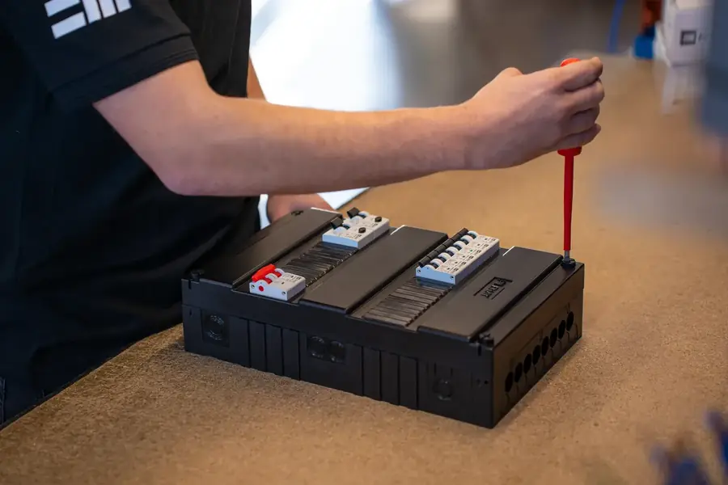
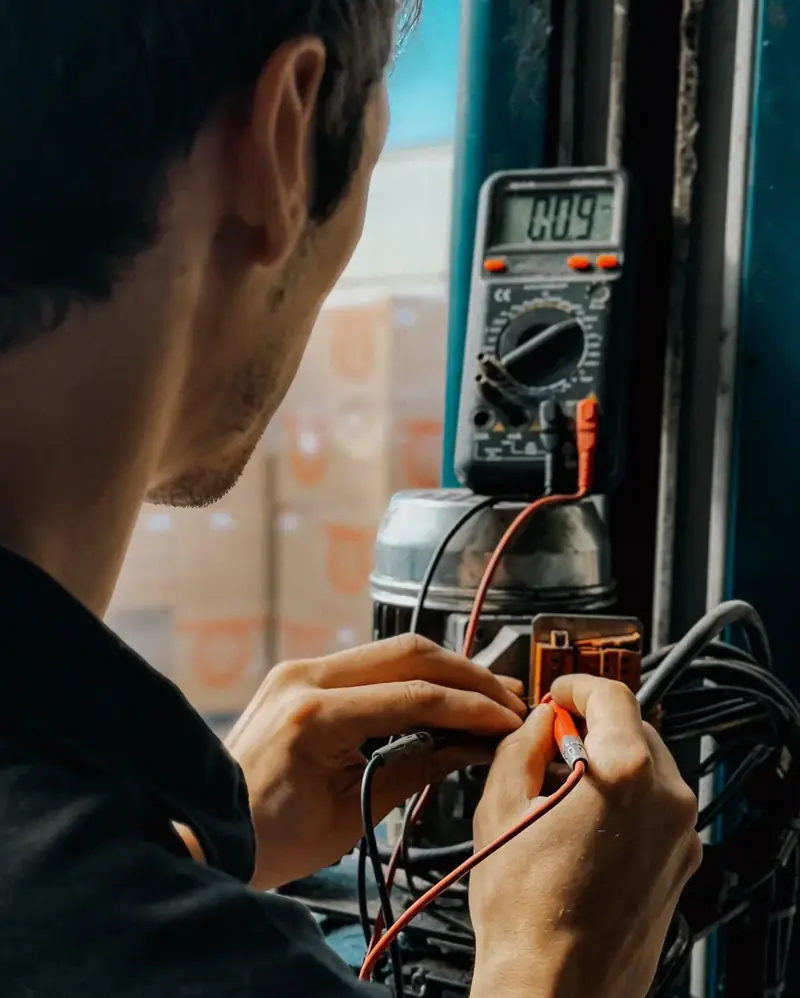
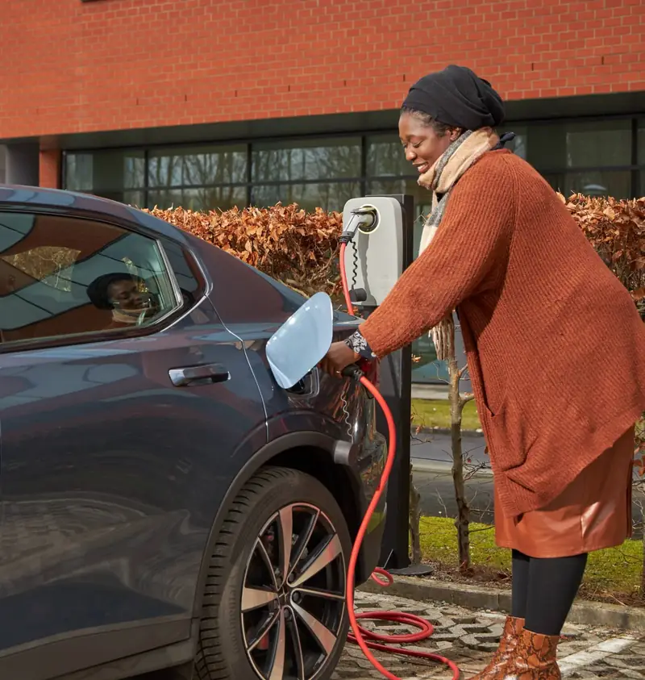
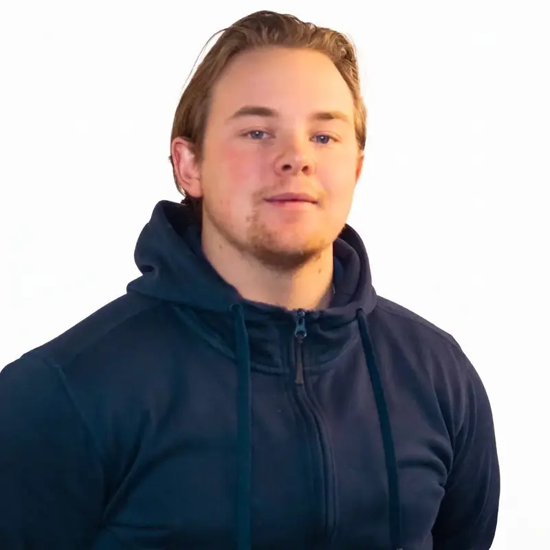

Groepenkast
- Groepenkast vervangen
- Meterkast uitbreiden
- Aardlekschakelaar plaatsen
- Groep voor inductie of warmtepomp
Storing, nieuwe groepen of een laadpaal? Meestal zijn we binnen 25 minuten bij u, en u hoort vooraf wat het kost.
Dag en nacht bereikbaar, ook in het weekendEen oude groepenkast vervangen, een storing opsporen, een laadpaal aansluiten of nieuwe lampen ophangen, dat doen we elke week. Valt de stroom uit, dan kunt u onze storingsdienst dag en nacht bellen.





Geen verrassingen achteraf: u weet wat er gebeurt en wat het kost voordat we beginnen.
Dag en nacht krijgt u iemand aan de lijn. Bij spoed gaat er meteen een monteur uit de buurt rijden.
De monteur bekijkt de situatie en vertelt wat er nodig is. Pas als u akkoord bent, beginnen we.
Na elke klus testen we of alles goed werkt. Op elke groep staat waar hij voor is.
De kosten voor een elektricien hangen af van wat er precies moet gebeuren. Een stopcontact vervangen is natuurlijk iets anders dan een stroomstoring opsporen of een groepenkast vernieuwen. Daarom werken wij niet met één standaardprijs voor alle werkzaamheden.
Onze elektricien bekijkt de situatie bij u op locatie en vertelt wat er nodig is. U krijgt vooraf te horen wat de werkzaamheden gaan kosten. Pas wanneer u akkoord gaat, beginnen we met het werk.
5 jaargarantie op al ons werk
De vragen die klanten ons het vaakst stellen over storingen, kosten en veiligheid.
Let op draadzekeringen, het ontbreken van een aardlekschakelaar en een kast die regelmatig uitvalt. Veel kasten in Amsterdam zijn twintig of dertig jaar oud en hebben te weinig groepen voor wat er nu in huis staat. We vertellen u precies wat nodig is en wat het kost.
We zien vaak een doorslaande aardlekschakelaar, kortsluiting en verouderde groepenkasten. Steeds meer zware apparaten, zoals inductie, een warmtepomp en een laadpaal, vragen veel van een oude installatie. We meten alles door, zodat het daarna ook echt opgelost is.
Dat hangt af van de klus. Kleine reparaties gaan per uur, grotere klussen zoals een nieuwe groepenkast krijgen een vaste prijs. Die hoort u altijd voordat we beginnen.
Kom niet aan draden die bloot liggen en raak niets aan als er water bij de elektra staat. Zet als het kan de stroom uit met de hoofdschakelaar in de meterkast. Is er rook of vuur, bel dan eerst 112 en daarna ons.
Druk elke maand op de testknop van de aardlekschakelaar en laat oude installaties op tijd nakijken. Zet zware apparaten zoals de wasmachine en droger niet op hetzelfde stopcontact of verlengsnoer.
Een elektricien uit de buurt is snel bij u en kent de woningen in Amsterdam. We werken in alle wijken, en helpen ook klanten in Duivendrecht, Diemen en Landsmeer.
We komen met een volle bus, dus de meeste klussen zijn in één keer klaar. Meestal zijn we binnen 25 minuten bij u.
020 782 0592